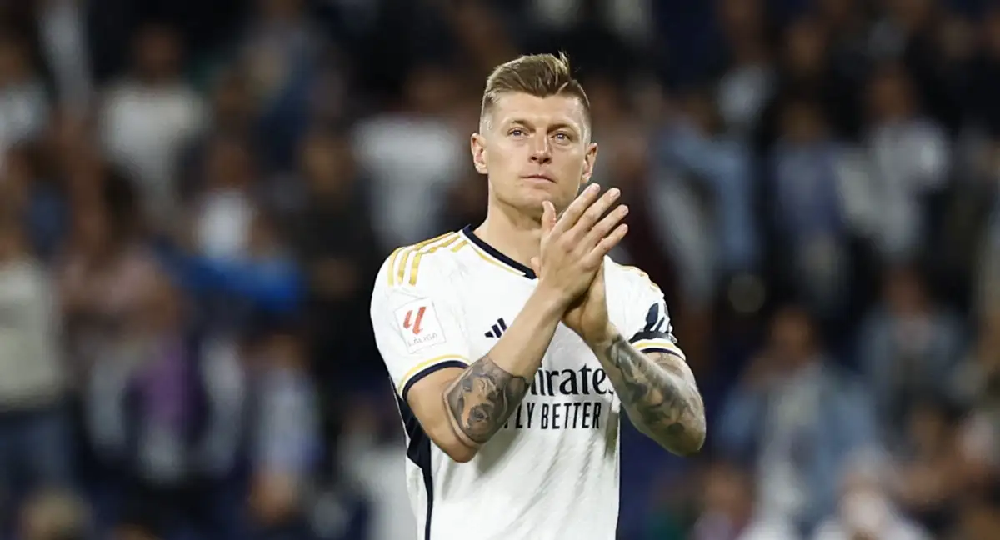
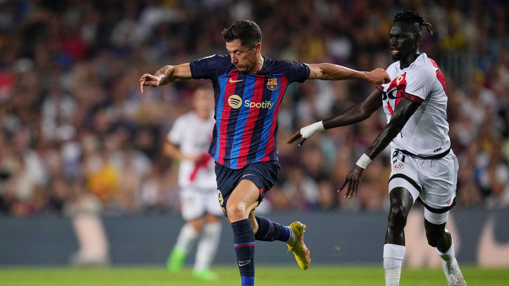
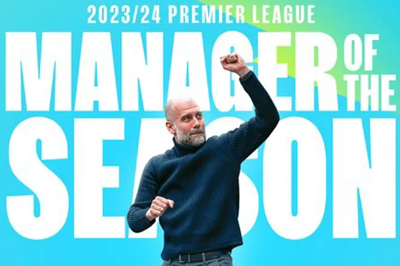

Palabras que dijo Joselu despues de meter el gol del encuentro ante el bayern de munich, el cual decidio la eliminatoria
Real Madrid perdía con marcador de 1-0 ante el Bayern Munich, pero Joselu ingresó para cambiar la historia del partido con su doblete.
Real Madrid perdía con marcador de 1-0 ante el Bayern Múnich, pero Joselu ingresó para cambiar la historia del partido con su doblete. El primer gol llegó en el minuto 75, cuando Joselu recibió un centro preciso de Luka Modrić y remató de cabeza para igualar el marcador. El estadio Santiago Bernabéu estalló en júbilo. Luego, en el minuto 89, aprovechó un error defensivo del Bayern para anotar el segundo gol, asegurando así la clasificación del equipo a la final.
Con este resultado, el equipo madrileño asegura su pase a la final, donde enfrentará al ganador del duelo entre Manchester City y PSG. La afición merengue celebra con júbilo esta nueva oportunidad de conquistar otro título europeo. Los jugadores, junto con el entrenador Carlo Ancelotti, destacaron la importancia de mantener la calma y la confianza en momentos críticos del partido. El capitán, Karim Benzema, también expresó su orgullo por el equipo: "Hemos trabajado duro toda la temporada para llegar hasta aquí y vamos a darlo todo en la final".
La noche fue mágica para Joselu, quien no solo se convirtió en el héroe del partido, sino que también reforzó su lugar en el corazón de los aficionados. Tras el pitido final, el estadio coreaba su nombre mientras sus compañeros lo abrazaban en una celebración efusiva. Ahora, el Real Madrid se prepara para enfrentar el próximo desafío con la esperanza de añadir otra estrella a su ya ilustre historia en la Liga de Campeones.
Noticias de ultima hora
Toni Kroos se retirará después de la Eurocopa

"El Real Madrid es y será mi último club. Hoy estoy feliz y orgulloso de haber encontrado en mi cabeza y en mi corazón el momento adecuado para esta decisión",
Toni Kroos deja el fútbol. Así de contundente. El jugador alemán y el Real Madrid han anunciado hoy que el centrocampista se retirará después de la Eurocopa de este verano. A sus 34 años, no renovará su contrato con el conjunto blanco y colgará las botas tras disputar el torneo con su selección, a la que regresó en el último parón internacional.
"El Real Madrid C. F. comunica que Toni Kroos ha decidido poner fin a su trayectoria como jugador de fútbol profesional después de la Eurocopa 2024", dice el cuadro del Bernabéu en un comunicado. "El Real Madrid quiere expresar su agradecimiento y su cariño a Toni Kroos, un jugador que ya forma parte de la historia del Real Madrid y que es una de las grandes leyendas de nuestro club y del fútbol mundial", añade.
También le quiso dar un mensaje de cariño el presidente Florentino Pérez: "Toni Kroos es uno de los grandes jugadores de la historia del Real Madrid y que este club es y será siempre su casa".
"17 DE JULIO DE 2014. EL DÍA QUE CAMBIÓ MI VIDA"
Kroos quiso compartir una carta a través de sus redes sociales: "17 de julio de 2014, el día de mi presentación en el Real Madrid, el día que cambió mi vida. Mi vida como futbolista, pero sobre todo como persona. Fue el comienzo de una nueva vida en el Club más grande del mundo. Hoy, después de 10 años, al final de la temporada, esta vida llega a su fin", anunció. "¡Nunca olvidaré esta década tan apasionante exitosa! Me gustaría agradecer muy especialmente al presidente Florentino Pérez, al Club y a todos los que me recibieron con el corazón abierto y confiaron en mí. Pero sobre todo quiero agradeceros, queridos madridistas, vuestro cariño y vuestro apoyo desde el primer día hasta el último", continuó, insistiendo en que su carrera terminará tras la Eurocopa.
Liga Española
Barcelona 3 - 0 Rayo Vallecano

Cómodo triunfo del Barça con un gol tempranero de Lewandowski y dos de Pedri en la segunda mitad
El Barça debía ganar al Rayo Vallecano para sellar la segunda plaza y la clasificación para la Supercopa de España de la próxima temporada. Los de Xavi han cumplido y se han llevado los tres puntos con un gol de Lewandowski y dos de un gran Pedri en la segunda parte.
Tras una primera parte de dominio azulgrana, pero sin crear mucho peligro, los cambios de Xavi surgieron efecto. Joao Félix puso la magia y el canario los goles. Destacable partido también de Lamine Yamal. Era su partido número 50 con la camiseta del Barça y el de la cantera creó mucho peligro por la banda derecha. También de Ter Stegen, que con cuatro paradas, mantuvo otra vez la portería a cero y sigue luchando por el Pichichi.
Os dejamos un breve resumen del partido:
Premier League
Pep Guardiola es elegido mejor entrenador de la Premier League y manda un mensaje a sus rivales

Pep Guardiola, técnico del Manchester City, ha sido elegido mejor entrenador de la Premier League tras lograr este domingo su cuarto título consecutivo
"Ganar cuatro títulos seguidos es uno de los logros de los que más orgulloso estoy en mi carrera. Esta es la liga más dura del mundo y nuestros competidores han jugado un fútbol increíble", declaró el técnico del Manchester City.
Pep Guardiola se impuso en la votación del 'Premier League Manager of the Year' a los españoles Mikel Arteta (Arsenal), Unai Emery (Aston Villa) y Andoni Iraola (Bournemouth) y al alemán Jurgen Klopp (Liverpool).
Guardiola también se acordó de sus otros rivales en la votación: "Me gustaría acordarme también de Jürgen Klopp, por las inolvidables batallas de muchos, muchos años. Y por Unai Emery, que volvió a hacer algo increíble para llevar al Aston Villa a la liga de Campeones. Y Andoni Iraola, con el Bournemouth, siendo su primera temporada en la Premier League, haciendo lo que ha hecho, remontando un duro inicio de temporada... Es un honor estar junto a todos ellos y ganar este trofeo. Defenderemos este premio lo mejor posible en el futuro".